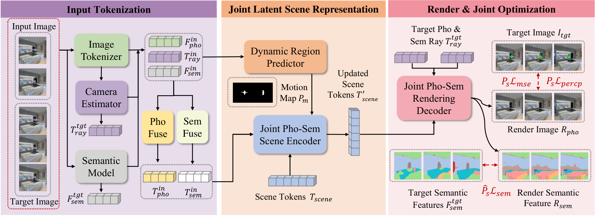
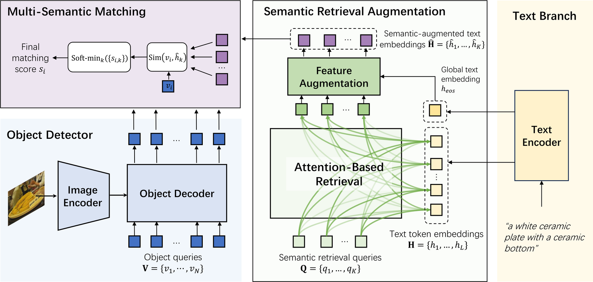
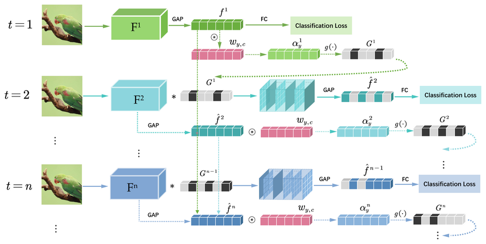
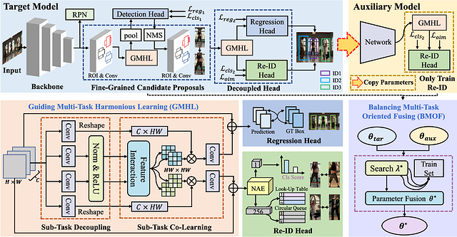
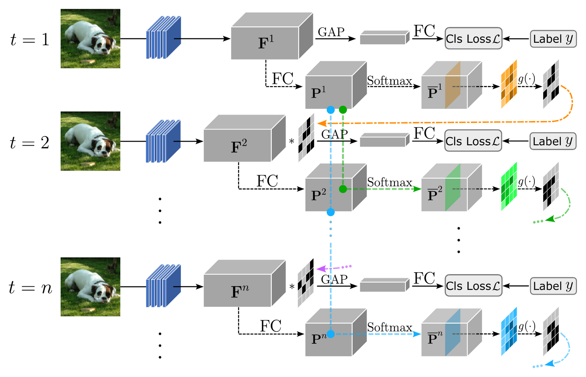

Research
I am interested in using language as transferable semantic knowledge across vision,
3D, and embodied intelligence. My recent work studies open-vocabulary visual
understanding, robust photometric-semantic reconstruction in dynamic scenes, and
instruction-grounded VLA policies. Selected works are highlighted.

Dynamic-Robust Photometric-Semantic Reconstruction for Open-Vocabulary 3D Scene Understanding
Boyu Cai,
Li Yang,
Yan Xu,
Wei Liu, Nian Liu, Sikui Zhang, Yan Wang, Chunfeng Yuan, Weiming Hu
ECCV, 2026
project page
/
arXiv
/
code
SPAR jointly reconstructs photometric and open-vocabulary semantic scene content
from sparse, unposed, and dynamic observations without explicit 3D supervision or
ground-truth motion masks.




Towards More Discriminative Feature Learning in SNNs with Temporal-Self-Erasing Supervision
Wei Liu, Li Yang, Mingxuan Zhao, Dengfeng Xue, Shuxun Wang,
Boyu Cai, Jin Gao, Wenjuan Li, Bing Li, Weiming Hu
AAAI, 2025
paper
/
doi
Temporal-Self-Erasing supervision dynamically suppresses previously activated
regions, encouraging complementary and more discriminative features over time.
{kind=link}